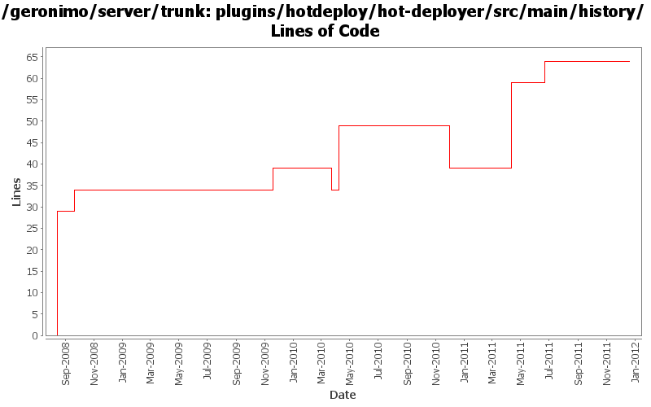

[root]/plugins/hotdeploy/hot-deployer/src/main/history

| Author | Changes | Lines of Code | Lines per Change |
|---|---|---|---|
| Totals | 11 (100.0%) | 104 (100.0%) | 9.4 |
| djencks | 4 (36.4%) | 53 (51.0%) | 13.2 |
| violalu | 1 (9.1%) | 20 (19.2%) | 20.0 |
| rickmcguire | 3 (27.3%) | 20 (19.2%) | 6.6 |
| genspring | 1 (9.1%) | 5 (4.8%) | 5.0 |
| gawor | 1 (9.1%) | 5 (4.8%) | 5.0 |
| dwoods | 1 (9.1%) | 1 (1.0%) | 1.0 |
GERONIMO-6240 Modify configs so that they use features as the bootstrap, and fix a few compile and test errors. Servers build but do not fully start
14 lines of code changed in 1 file:
changed dependencies.xml after a clean build.
5 lines of code changed in 1 file:
GERONIMO-5885 Upgrade karaf from 2.1.2 to 2.2.1-SNAPSHOT
20 lines of code changed in 1 file:
GERONIMO-5702: Update for Karaf 2.1.2. Based on patch from Viola Lu
5 lines of code changed in 1 file:
GERONIMO-5242 Make spec version naming conventions consistent.
Updating trunk to new spec numbering rules.
15 lines of code changed in 1 file:
GERONIMO-5201 Repace service versions of spec bundles with Geronimo latest versions.
0 lines of code changed in 1 file:
some management plugin cleanup
5 lines of code changed in 1 file:
update other XML files with embedded versions from 2.2-SNAPSHOT to 3.0-SNAPSHOT
1 lines of code changed in 1 file:
GERONIMO-4692 sort dependencies.xml, except for connector-1_6
5 lines of code changed in 1 file:
GERONIMO-4239 Reaarrange some jsr88 related classes to fix a nasty classcast exception in the offline deployer. Move some farming classes around to eliminate an inessential dependency on deployment code
5 lines of code changed in 1 file:
GERONIMO-4248 Add dependency history files
29 lines of code changed in 1 file: